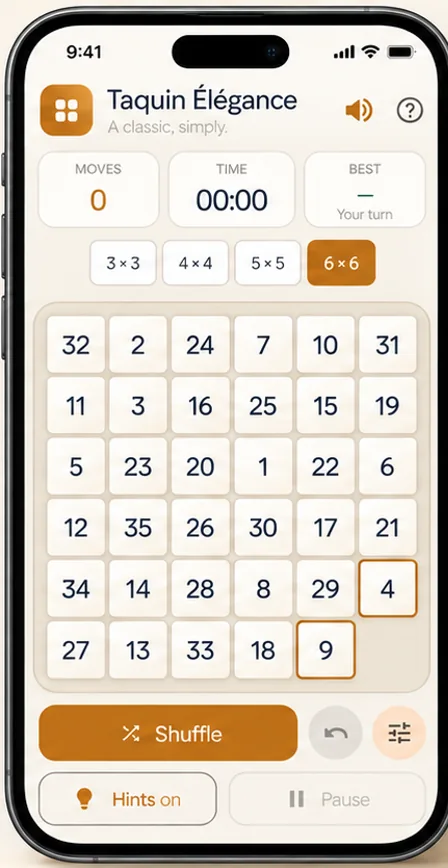
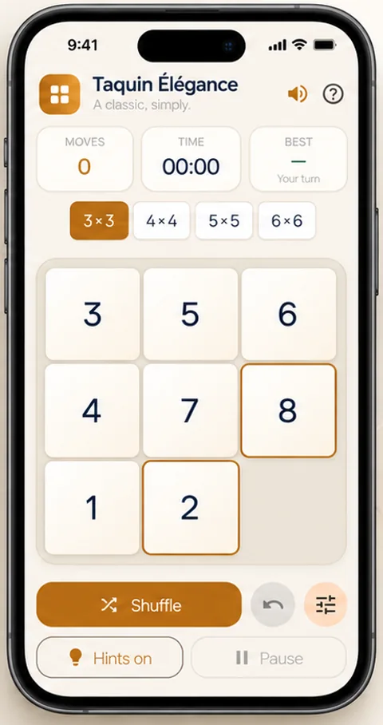
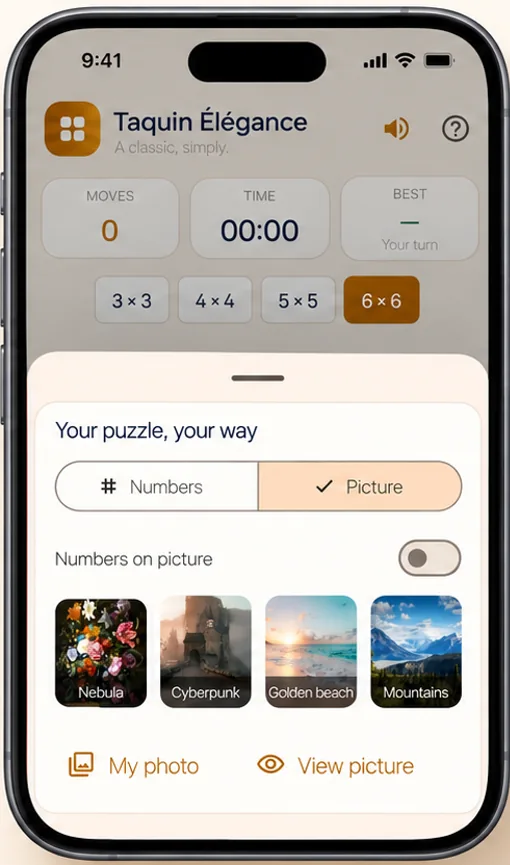

01 / YOUR KIND OF CHALLENGESmall puzzle.
Small puzzle.
Big challenge.
From 3 × 3 to 6 × 6, choose the grid that suits you. Start small, then take on a bigger challenge.
3 × 34 × 45 × 56 × 6

A CLASSIC. SIMPLY.
And you, a moment of calm.
Rediscover the sliding puzzle in an app where simplicity meets elegance.

Less noise. More play.
THE JOY OF SIMPLE THINGS
Everything you need to focus,
challenge yourself and enjoy each
tile as it finds its place.
From 3 × 3 to 6 × 6, choose the grid that suits you. Start small, then take on a bigger challenge.

Choose a picture or add your own photo. Enjoy putting something you love back together.

Stuck on a tile? Turn on hints to find your way forward and keep your ideas moving.
Take a break whenever you like. Your puzzle will be waiting, just where you left it.
EASY TO LEARN. A PLEASURE TO MASTER.
One empty square. A world of possibilities.
The sliding puzzle is a timeless classic.
A 3 × 3 to 6 × 6 grid, numbers or a photo: make it your own.
Move a neighboring tile into the empty square to put the numbers in order or rebuild the picture.
Every tile is in its place. Ready for another challenge? Shuffle and start again.
THE SAME JOY. A DIFFERENT SIZE.
On iPhone or iPad, make a little room for play.
IN A FEW WORDS
A sliding puzzle is a grid of movable tiles with one empty square. Slide neighboring tiles into that space to put numbers in order or rebuild a picture.
Taquin Élégance offers four grid sizes: 3 × 3, 4 × 4, 5 × 5 and 6 × 6. Choose a small grid to get started, or a larger one for a bigger challenge.
Yes. Choose one of the pictures included in the app or add your own photo to turn it into a puzzle.
Yes. You can pause your game and turn on hints whenever you need a helping hand.
Taquin Élégance is an app for iPhone and iPad. The screenshots on this page show its interface on both screen sizes.
TAQUIN ÉLÉGANCE
Sometimes, moving just one tile
is all it takes to clear your mind.